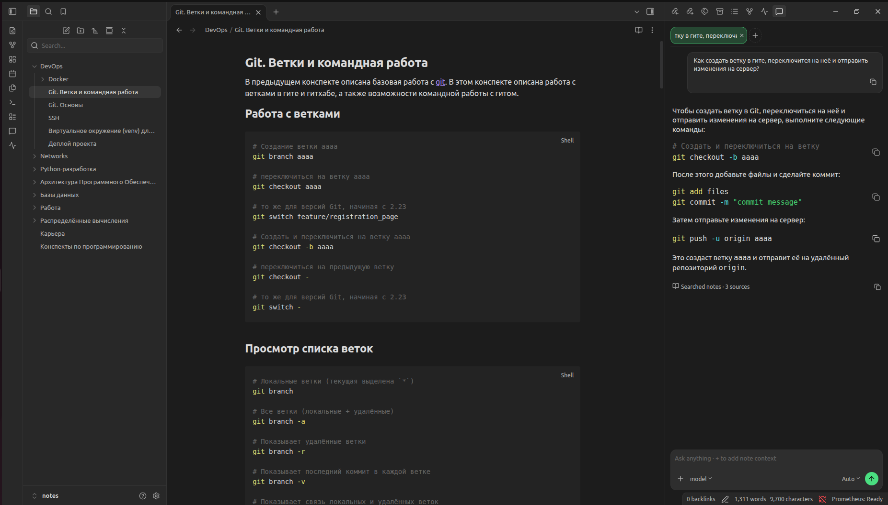

Grounded chat
Answers only from retrieved vault chunks. If context is thin, Prometheus says so instead of inventing facts.
Your notes. Your models. Your machine.
Ask questions in natural language. Prometheus searches your notes by meaning, answers only from what it finds, and shows the sources — with no cloud LLM or embedding APIs.
Community Plugin + local sidecar Runtime + Ollama. Desktop only.
Capabilities
UI in Obsidian, heavy work in the managed Runtime, generation through your Ollama model. Everything stays on your machine.
Answers only from retrieved vault chunks. If context is thin, Prometheus says so instead of inventing facts.
Find notes by meaning, not only exact keywords. Retrieval works without generating a full chat reply.
Every answer links back to notes and headings. Open the source in Obsidian and verify it yourself.
Markdown is chunked and embedded locally. Later edits update the index incrementally.
Add specific notes to the prompt with the / picker when you need tighter context.
UI scopes: Auto, whole Vault, current note, or current folder — narrow retrieval to the task.
Answers stream in. Cancel generation, restart the runtime, or reindex the vault when needed.
The plugin downloads and runs the sidecar outside the vault, verifies checksum and version — or point it at your own binary.
Pick any local model you already have installed. Prometheus is not locked to a single LLM.
Interface
Ask about Git, architecture, or your own notes — the answer is grounded in the vault, not the model’s general knowledge.

How it works
Three local processes: a thin Obsidian plugin, Prometheus Runtime, and Ollama.
Runtime embeds the query and retrieves relevant chunks from sqlite-vec (optional hybrid + rerank).
Only retrieved fragments enter the context. Grounding policy forbids filling gaps from model trivia.
Ollama generates on localhost. The plugin streams the text and shows sources you can open.
Obsidian Community Plugin (TypeScript UI) │ 127.0.0.1 ▼ Prometheus Runtime chunking · FastEmbed · sqlite-vec · retrieval │ localhost ▼ Ollama → local LLM │ ▼ Answer + note sources
Privacy
Base mode uses no cloud LLMs, cloud embeddings, or third-party note uploads.
| Stays on your device | Not used in base mode |
|---|---|
| Vault Markdown | Cloud LLM APIs |
| Embeddings & vector index | Cloud embedding APIs |
| Chat prompts & answers | Third-party note upload |
| Ollama model weights | Hosted “Prometheus cloud” |
Documentation
From quick install to RAG pipeline details and FAQ.
Ollama, plugin, managed Runtime, Ready status, and your first question.
Process architecture, indexing, retrieval, and grounded generation.
Chat, Search, scopes, Settings, Status, diagnostics, and 0.1 boundaries.
Offline use, mobile, cloud, custom binary, and “not in my notes”.
Open source, Apache-2.0. No sales team, no demo request.